Radiatoren
4 April, 2019
22:40
Inhoud
|
|
Inleiding
Een radiator geeft zijn warmte af (of neemt eventueel zelfs warmte op) door de volgende mechanismen:
Welk aandeel ieder van de bovenstaande mechanisme heeft is afhankelijk van de constructie van de radiator en de aanvoer temperatuur. De totale hoeveelheid warmte die een radiator maximaal kan afgeven, wordt aangeduid door de capaciteit. De capaciteit is niet alleen afhankelijk van de constructie, maar ook zeer sterk afhankelijk van de aanvoer temperatuur.
In dit document maken we een analyse van radiatoren en geven getallen/formules voor
(bijgevoegd zijn ook Python bibliotheken en een JupyterLab programma om zelf berekeningen te maken)
Daarnaast worden metingen en ervaringen met ventilatoren op radiatoren gedeeld.
TODO: Ook wordt het effect van radiator folie beschreven…..
Samenvatting
Volgens de geldende Europese norm EN442 moet het vermogen van een radiator worden opgegeven bij 75/65/20, de zogenaamde P50-waarde. Dit is de capaciteit bij een aanvoer temperatuur van 75 graden Celsius, een afvoertemperatuur van 65 graden en een ruimte temperatuur van 20 graden Celsius.
We hebben een goede formule om het vermogen van een radiator om te rekenen naar een andere (lagere) aanvoer temperatuur. We hebben metingen verricht bij een aanvoer temperatuur van 43 graden Celsius, waaruit blijkt dat deze formule behoorlijk adequaat is. Tevens hebben we hiermee aangetoond dat we de woonkamer kunnen verwarmen met een aanvoer temperatuur van 43 graden Celsius en dat we momenteel (er moeten nog een aantal isolatiemaatregelen worden genomen) genoeg hebben aan een vermogen van 2000 Watt. | 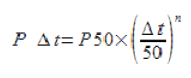 |
Het transport van warmte van radiator naar omgeving vindt plaats via Convectie (transport door bewegende lucht) en Straling. Bij convectie kan sprake zijn van natuurlijke convectie eventueel aangevuld met geforceerde convectie. We hebben formules om deze verschillende onderdelen van het warmtetransport afzonderlijk te bepalen. Hierdoor kunnen we bijvoorbeeld voorspellen wat het nut van ventilatoren en radiator folie voor een bepaalde configuratie zal zijn.
Door een vergelijking van de eigen berekeningen en de gegevens van fabrikanten, blijken zelfs gegevens van de fabrikant van radiatoren niet kloppen.
Ventilatoren kunnen de capaciteit van een radiator (tijdelijk) verhogen, waardoor de aanvoertemperatuur kan worden verlaagd, waardoor het rendement wordt verhoogd. Over ventilatoren is een aparte pagina gemaakt.
ToDo: Transport verlies en het effect van extra buis-isolatie ….
ToDo: Experimenten met radiator folie in een lab opstelling
Radiator Typen
Het type en de hoogte van een radiator bepalen een aantal belangrijke eigenschappen:
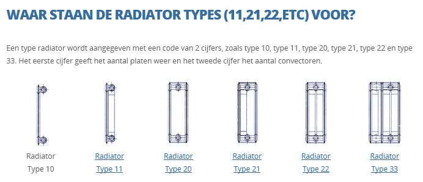
Capaciteit
De capaciteit bepaalt hoeveel warmte een radiator kan afgeven per tijdseenheid of te wel hoe snel de radiator een bepaalde ruimte kan opwarmen.
Volgens de geldende Europese norm EN442 moet het vermogen van een radiator worden opgegeven bij 75/65/20, de zogenaamde P50-waarde. Dit is de capaciteit bij een aanvoer temperatuur van 75 graden Celsius, een afvoertemperatuur van 65 graden en een ruimte temperatuur van 20 graden Celsius. P50 slaat op het gemiddelde temperatuurverschil van 50 graden Celsius tussen radiator en lucht.
Op zich een wat vreemde definitie, immers de flow bepaald volledig de capaciteit van de radiator. Maar ja aan de andere kant de flow moet precies zo worden ingesteld dat de afvoertemperatuur 65 graden Celsius bedraagt en de energie die je er dan instopt is de capaciteit ???
Als je de capaciteit van een bestaande radiator wilt weten, kun je de radiator opzoeken bij de fabrikant (de radiatoren van de verschillende fabrikanten onderling verschillen niet zo veel, dus voor gewone lamel radiatoren kun je bijvoorbeeld hier kijken
https://www.radson.com/docs/CLD%20-%20NL.pdf ,
of geef de maten en type aan in de online rekentool
https://www.climatebooster.nl/calculator-radiatorpro,
welke laatste ook de capaciteit bij een afwijkende temperatuur kan geven en ook het effect van het gebruik van hun ventilatoren.
Het berekenen van de capaciteit vanaf scratch is op zich niet zo moeilijk, maar door de verschillende eenheden stelsels en de ruime keuze aan benaderingsformules is het toch een heel gepuzzel, om de juiste formules bij elkaar te vinden. Het bijgevoegde Python programma bevat een complete set om zowel de capaciteit bij natuurlijke convectie als ook bij geforceerde luchtstromen te berekenen.
Convectie
Door het temperatuurverschil tussen radiator en lucht in de ruimte ontstaat een natuurlijke stroming van de lucht. De langsstromende lucht transport de warmte van de radiator naar de rest van de ruimte. (zie bijvoorbeeld: https://en.wikipedia.org/wiki/Natural_convection )
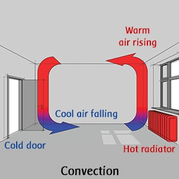
De formule zelf is relatief eenvoudig:
https://www.lisafea.com/pdf/Convection_heat_transfer_coefficient.pdf
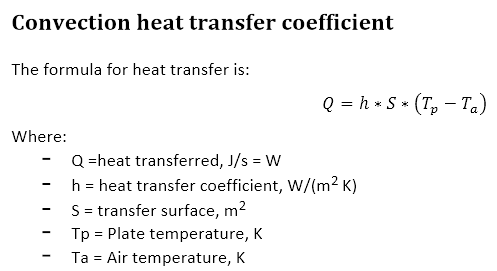 | ` |
Maar er zijn 2 grote onbekenden, de warmteoverdrachtscoëfficiënt h ( voor metaal-lucht 5 .. 8 [W/m2*K]) en de oppervlakte. Op zich lijkt de oppervlakte bekend, maar het is niet duidelijk voor hoeveel de extra lamellen moeten meetellen, de vrije oppervlakte van de extra lamellen is bijna 2 keer de oppervlakte van het paneel, maar mag je die ook zo meetellen ? Daarnaast zal hoe hoger de radiator is, hoe groter de luchtsnelheid wordt en mogelijk wordt het punt van turbulentie bereikt, waardoor een veel effectievere warmtetransport kan plaatsvinden. Verder op in deze notitie gaan we proberen van deze effecten een realistische schatting te maken.
|
|
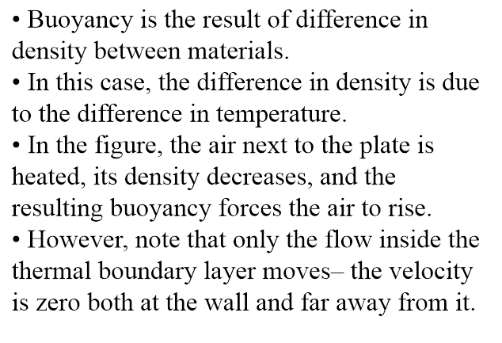
From: http://home.ku.edu.tr/~mmuradoglu/ME302/chapter_9.pdf https://erac.ntut.edu.tw/ezfiles/39/1039/img/832/Ch7-NaturalConvection.pdf
Er is dus alleen luchtsnelheid in de oppervlakte laag. Merk bovendien op dat als de radiator hoger wordt er bovenin turbulentie kan optreden | 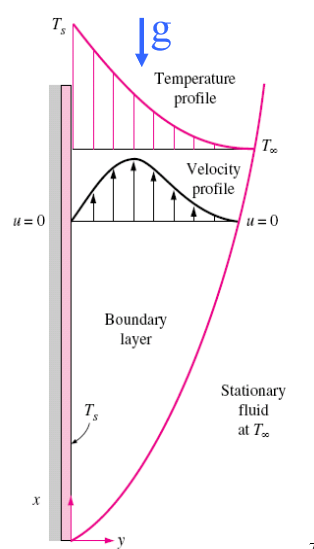
Screen clipping taken: 25-Mar-19, 11:25
|
Straling
Ieder object dat een Temperatuur heeft boven het absolute nulpunt, zendt warmtestraling uit. Omdat warmtestraling een vorm van elektromagnetische straling is, heb je geen medium nodig om de energie over te dragen.
Het vermogen dat wordt uitgezonden kan worden berekend met de wet van Stefan Bolzman:
https://en.wikipedia.org/wiki/Stefan%E2%80%93Boltzmann_law
Of: http://hyperphysics.phy-astr.gsu.edu/hbase/thermo/stefan.html
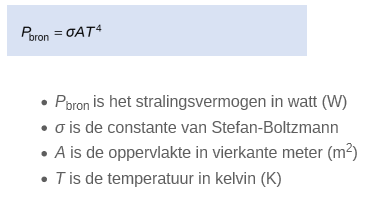
Voor de berekening van het warmtetransport tussen 2 objecten moet worden uitgegaan van een thermisch evenwicht van die 2 objecten, dus netto wordt er getransporteerd:
Het uitgestraalde vermogen [Watt]
| A = Oppervlakte [m2] e = emissiviteit van de radiator (0.95 .. 1) σ = Stefan-Bolzman constante = 5.67*10^-8 [ W/(m2 *K4) ]
T1 = absolute temperatuur van de straler [K] T2 = de gemiddelde absolute omgevingstemperatuur [K] |
De emissiviteit van een radiator en de meeste andere objecten bedraagt 0.95.
Nog een bijzonderheid: Lucht is voor warmtestraling nagenoeg doorzichtig (dus neemt geen stralingswarmte op en geeft ook geen stralingswarmte af), dus de warmte gaat verliesloos door de lucht en wordt pas geabsorbeerd als het bij vaste objecten en/of personen aankomt.
Geforceerde Convectie
De hoeveelheid warmte die door convectie uit een radiator kan worden gehaald is met name afhankelijk van het temperatuurverschil tussen radiator en omgevende lucht en van de snelheid van de langsstromende lucht. Hoe hoger de radiator, hoe hoger de snelheid van de natuurlijke luchtstroom en hoe harder een ventilator moet blazen om een extra effect te creëren. Bij voorkeur moet een ventilator ook het kritieke punt van de turbulentie overschrijden. Hieronder is middels de verhouding Grashof/Reynolds aangegeven wanneer natuurlijke convectie de boventoon voert of wanneer de geforceerde convectie de boventoon voert. Omdat Grashof Hoogte^3 bevat en Re Hoogte, is de verhouding Gr/Re^2 evenredig met de Hoogte van de radiator.
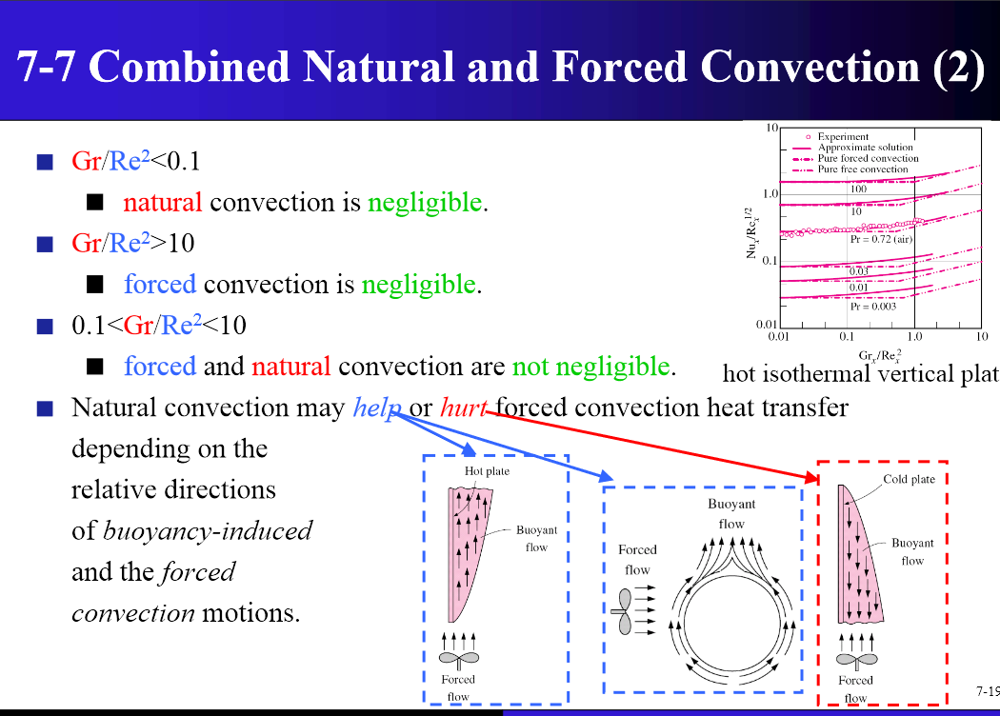
https://erac.ntut.edu.tw/ezfiles/39/1039/img/832/Ch7-NaturalConvection.pdf
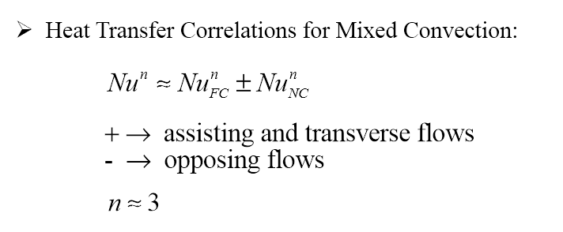
Voorbeeld radiator
Als voorbeeld om de berekeningen te toetsen en een gevoel te krijgen van de grootte van de verschillende effecten, gebruiken we steeds de volgende radiator als voorbeeld (deze radiator is ook gebruikt om het effect van ventilatoren te onderzoeken). Deze radiator wordt ook gebruikt bij de metingen van het effect van ventilatoren op de capaciteit.
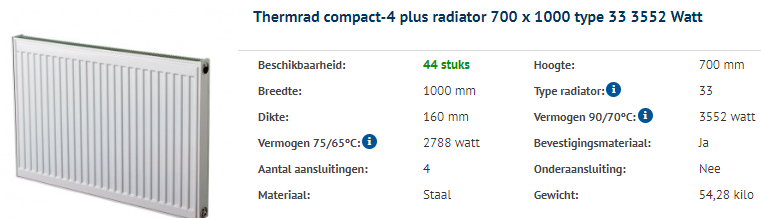
Verhouding Convectie / Straling
Bij een radiator dragen alle oppervlakten mee aan de capaciteit van de radiator. Alleen de buitenste oppervlakten dragen bij aan het warmtetransport en dus de capaciteit door straling. Daarmee is de verhouding convectie / straling sterk afhankelijk van het type radiator. Door plaatsing van ventilatoren kan het convectie deel worden vergroot.
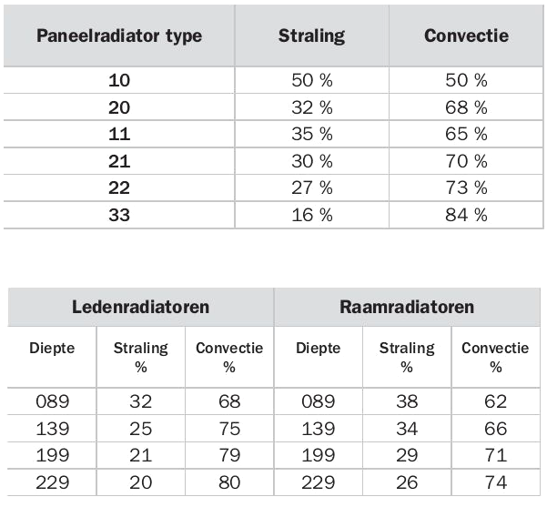
Als we voor onze voorbeeld radiator voor alle gangbare typen bij 2 verschillende temperatuur instellingen met de volgende rekentool https://www.climatebooster.nl/calculator-radiatorpro uitrekenen, krijgen we het volgende overzicht (omdat straling eenduidig te bereken is, is deze meegenomen in de tabel)
Type | P50 | P20 | forced | Opp | Straling-50 | percentage-50 | Straling-20 | percentage-20 | P20forced |
20 | 1167 | 345 | 527 | 1.4 | 488 | 42 | 168 | 49 | 32 |
21 | 1467 | 434 | 663 | 1.4 | 488 | 33 | 168 | 39 | 25 |
22 | 1824 | 539 | 824 | 1.4 | 488 | 27 | 168 | 31 | 20 |
30 | 1659 | 490 | 749 | 1.4 | 488 | 29 | 168 | 34 | 22 |
33 | 2607 | 771 | 1178 | 1.4 | 488 | 19 | 168 | 22 | 14 |
Pasted from <file:///C:\D\_Milieu\Glas_temperatuur.xlsx>
Emissiviteit in bovenstaande tabel is gesteld op 0.95
We constateren de volgende punten
Convectie Berekening
De formule voor convectie is relatief eenvoudig, echter er zitten een paar parameters in die formule, die niet één-éénduidig vastliggen, dit zijn de warmteoverdrachtscoëfficiënt en het effectief rendement van de extra lamellen.
Daarnaast lijkt het erop dat ook de fabrikanten van radiatoren er een zooitje van maken:
Hier 1 voorbeeld, we kijken naar de radiatoren van Radson https://www.radson.com/docs/CLD%20-%20NL.pdf
Als we voor 2 temperatuur bereiken: P20 en P50 en boor hoogte van radiatoren 900mm en 500mm,
De door de fabrikant opgegeven waarden nemen (kolom "Fabrikant")
Kunnen we de set vergelijkingen (kolom "Samenstel") oplossen (4 vergelijkingen met 3 onbekenden
R = Radiation van 1 zijde van 1 paneel
P = Convectie van 1 zijde van 1 paneel
L = Convectie van 1 zijde van 1 paneel
Krijgen we waarden voor R, P, L, kolom "Waarde na oplossing vergelijking)
En in de kolom "Berekend" de totale capacitiet op basis van de gevonden R,P,L.
Radson | Waarde na oplossing vergelijkingen |
|
| Samenstel | Fabrikant | Berekend |
Radiation | 55 | 450*900/P50 | 11 | 2*R+2*P+2*L | 614 | 619 |
Plaat | 106 |
| 21 | 2*R+4*P+2*L | 826 | 831 |
Lamel | 148.5 |
| 22 | 2*R+4*P+4*L | 1128 | 1128 |
Lamel/Plaat | 1.4 |
| 33 | 2*R+6*P+6*L | 1637 | 1637 |
|
|
|
|
|
|
|
Radiation | 9.5 | 450*900/P20 | 11 | 2*R+2*P+2*L | 178 | 178 |
Plaat | 27.5 |
| 21 | 2*R+4*P+2*L | 233 | 233 |
Lamel | 52 |
| 22 | 2*R+4*P+4*L | 321 | 337 |
Lamel/Plaat | 1.9 |
| 33 | 2*R+6*P+6*L | 472 | 496 |
|
|
|
|
|
|
|
Radiation | 67 | 1500*500/P50 | 11 | 2*R+2*P+2*L | 1278 | 1278 |
Plaat | 261 |
| 21 | 2*R+4*P+2*L | 1800 | 1800 |
Lamel | 311 |
| 22 | 2*R+4*P+4*L | 2448 | 2422 |
Lamel/Plaat | 1.2 |
| 33 | 2*R+6*P+6*L | 3605 | 3566 |
|
|
|
|
|
|
|
Radiation | 21.5 | 1500*500/P20 | 11 | 2*R+2*P+2*L | 364 | 364 |
Plaat | 70 |
| 21 | 2*R+4*P+2*L | 504 | 504 |
Lamel | 90.5 |
| 22 | 2*R+4*P+4*L | 675 | 685 |
Lamel/Plaat | 1.3 |
| 33 | 2*R+6*P+6*L | 991 | 1006 |
Pasted from <file:///C:\D\_Milieu\Glas_temperatuur.xlsx>
We zien dat de berekende en de door de fabrikant opgegeven waarden exact kloppen (we hebben maar 3 vergelijkingen nodig gehad om de R,P,L waarden te berekenen, de vierde vergelijking kan gebruikt worden als controle.
Wat we ook zien is dat de radiation van deze radiatoren veel te laag is:
Bijv Radiatie van 450*900/P50 bedraagt 140 Watt per zijde van een paneel en over deze formule bestaat absoluut geen discussie.
We zien ook dat de effectiviteit van de lamellen niet erg goed gedefinieerd is, maar wel groter is dan 1. We gebruiken vanaf nu hiervoor een factor 1.3.
Omdat we niet zo heel geïnteresseerd zijn in absolute waarden, maar meer in verhoudingen tussen 2 situaties, gebruiken we vanaf nu alleen onze eigen berekeningen.
Capaciteit bij lagere temperatuur
Volgens de geldende Europese norm EN 442 moet het vermogen gedefinieerd worden bij 75/65/20, dus een aanvoer temperatuur van 70 Celsius, een afvoertemperatuur van 65 Celsius en een omgevingstemperatuur van 20 Celsius. De gemiddelde temperatuur van de radiator is dus 70 Celsius
Voor ons voorbeeld model is dat dus 2412 Watt.
Volgens http://radiator.stiliac.com/docs/en/norma%20di%20calcolo.pdf moet je dan het vermogen bij een andere delta-T kunnen berekenen met de volgende formule
| 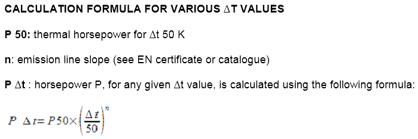
|
Formule + berekening die ook aardig klopt: https://www.engineeringtoolbox.com/heat-emission-radiators-d_272.html
N = 1.34 (afgekeken van een andere radiator, dus kan foutief zijn)
P50 = 2412
P60 = 2412 * (( 60 / 50 ) ^1.34) = 3079.4998 (fabrikant geeft 3072 aan)
Deze formule lijkt dus een behoorlijk goede benadering.
Voor deze radiator, P50 = 2340, P20=656 https://www.radson.com/docs/CLD%20-%20NL.pdf
P20 = 2340 * (( 20 / 50 ) ^1.357) = 674.8561
P50 = 656 * (( 50 / 20 ) ^1.357) = 2,274.6178
Gaat het beide kanten ook behoorlijk goed
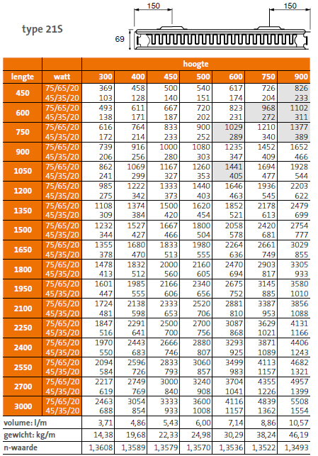
Ook met deze (onleesbare) grafiek van Dura, kun je decapaciteit bij een andere temperatuur berekenen.
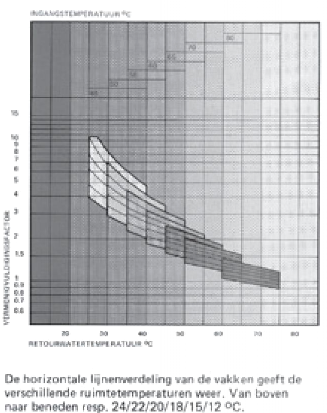
Controle bij 43 Celcius
We hebben een aantal metingen verricht in de woonkamer, bij 0 graden Celsius buitentemperatuur en 20 graden Celsius kamertemperatuur. Nu we alle gegevens bijeen hebben kunnen we kijken of de waarnemingen ook met elkaar overeen komen.
De maximale aanvoer temperatuur is teruggeregeld naar 43 graden Celsius. Bij deze temperaturen zijn de radiatoren in staat om de temperatuur op 20 graden te houden en ook na een nachtverlaging tot 16 graden Celsius de kamer in een aantal uren naar 20 graden Celsius te brengen.
Het vermogen van de huidige radiatoren bij 75/65/20 bedraagt : P50 = 2412 + 2788 + 922 = 6122 [Watt]
Voor het gemak houden we de n-waarde van alle radiatoren gelijk op 1.34.
De gemiddelde radiator temperatuur zal dan ongeveer 40 graden Celsius bedragen.
De delta-T bedraagt dus 20 graden Celsius.
Radiator | Type | Breedte [cm] | Hoogte [cm] | P50 [W] | P20 [W] |
Radiator Achter | 33 | 100 | 70 | 2788 | 2788*(20/50)^1.34=817 |
Radiator Voor | 21 | 200 | 50 | 2412 | 2412*(20/50)^1.34=707 |
Radiator keuken | 11 | 80 | 70 | 922 | 922*(20/50)^1.34=270 |
Totaal |
|
|
| 2788+2412+922=6122 | 6122*(20/50)^1.34=1793 |
Er is een tweede experiment gedaan, met een elektrische straalkachel. Hier blijkt dat we met 2000 Watt de kamer onder deze condities ook warm kunnen houden en met 2500 Watt kunnen we de kamer zelfs redelijk snel op temperatuur te brengen.
Daarnaast hebben we nog het gasverbruik genoteerd. Hier kunnen we grofweg ook wel iets uithalen: Op deze dagen gebruikte we ongeveer 5 m3 gas per dag. Deze hoeveelheid gas komt overeen met 50 kWh. Over 24 uur is dat dus iets meer dan 2000 Watt.
Deze gegevens komen dus behoorlijk goed met elkaar overeen. Het gasverbruik is wat hoger, maar mogelijk dat daar de volgende zaken een rol spelen:
We kunnen nu ook een schatting van de gemiddelde isolatiewaarde van de woonkamer bepalen:
Oppervlakte 50 m2
Omtrek 30 m
Hoogte 2.5 m
Totale Oppervlakte bedraagt dus 2.5*30+2*50 = 175 m2
De gemiddelde Isolatiewaarde R_gemiddeld = 20 * 175 / 2000 = 1.75 m2.K/Watt, dat moet duidelijk nog wat beter.
Bijzondere Radiatoren
Eco radiatoren van Henrad, hierbij wordt het water eerst door de voorplaat en daarna door de achterplaat geleid. Hierdoor wordt de stralingswarmte van de voorkant verhoogd en van de achterkant verlaagd.
http://www.henrad.eu/henrad1/wp-content/uploads/HR-ECO-TD-NL.pdf
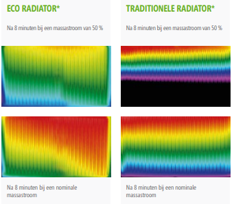
Lage temperatuur radiatoren: https://pure.tue.nl/ws/files/1608095/397131020256613.pdf
CV Tuning
Uitgebreid artikel, over allerlei kleine details: https://gathering.tweakers.net/forum/list_messages/1490013/0
Waterzijdig inregelen: https://woningadvies.revenberg.net/wp-content/uploads/Waterzijdig-inregelen-cv-installaties.pdf
Radiator Folie
ToDo !!!!!
Een deel van de energie wordt via straling aan de achterkant van de radiatoren uitgestraald. Deze energie wordt door de muur geabsorbeerd, waardoor de muur veel heter wordt dan gewenst en waardoor onnodig energie verloren gaat.
Radiator folie reflecteert het grootste deel van het stralingsvermogen dat naar achteren wordt gestraald. De energiebesparing is groter naar mate de radiator minder platen heeft, dus een radiator type 10 levert een veel grotere besparing dan radiator type 33.
Besparing bij een gemiddelde instelling van de aanvoer temperatuur
Radiator | Type | Vermogen [W] | Straling [%] | Straling | Bolzman [W] Achterzijde |
Keuken | 11 | 922 | 35% | 922 * 0.35/2 = 161 | 156 |
Voor | 21 | 2412 | 30% | 2412 * 0.3 / 2 = 361 | 279 |
Achter | 33 | 2788 | 16% | 2788 * 0.16 / 2 = 223 | 196 |
Totaal |
| 922 + 2412 + 2788 = 6122 |
| 161 + 361 + 223 = 745 | 156 + 279 + 196 = 631 |
Besparing bij een lage aanvoer temperatuur van 43 graden Celsius
Radiator | Type | Vermogen [W] | Straling [%] | Straling | Bolzman [W] Achterzijde |
Keuken | 11 | 922*(20/50)^1.33=273 | 35% | 273 * 0.35/2 = 48 | 71 |
Voor | 21 | 2412*(20/50)^1.33=713 | 30% | 713 * 0.3 / 2 = 107 | 126 |
Achter | 33 | 2788*(20/50)^1.33=824 | 16% | 824 * 0.16 / 2 = 66 | 88 |
Totaal |
| 273 + 713 + 824 = 1810 |
| 48 + 107 + 66 = 221 | 71 + 126 + 88 = 285 |
De verlies vermogens berekend op basis van percentage van het vermogen van de radiatoren, kolom "Straling Achterzijde" en op basis van de stralingswet van Bolzman komen redelijk overeen, voor verdere berekeningen gebruiken we Bolzman (deze zijn berekend in een apart Excel sheet).
Afgelopen jaar bedroeg het aantal Graaddagen 2774 (bron: https://www.mindergas.nl/degree_days_calculation ).
Het aantal Graaduren bedraagt dus 24 * 2774.
Bij een temperatuurverschil tussen binnen en buiten van 20 graden Celsius heb ik 2000 Watt nodig om de temperatuur binnen constant te houden. Dus per graad temperatuurverschil heb ik 100 Watt nodig.
Dus totaal gasverbruik op basis van het verbruik van 100 Watt /Celsius/graaduur bedraagt 24 * 2774 * 100 / 1000 = 6658 kWh
Dus gasverbruik is 6658 / 10 = 665.8 m3 (dit lijkt een realistische waarde, vóór de isolatie van mijn woonkamer was het verbruik ongeveer 1400 ... 1600 m3 en ik hoopte de helft te gaan besparen).
De ratio stralingsvermogen t.o.v. het totale vermogen bedraagt 285 / 1810 = 0.1575
Om een schatting te maken van de besparing die bereikt kan worden met radiator folie in de woonkamer, kunnen we deze zelfde ratio toepassen, dus
Energie besparing : 0.1575 * 6658 = 1049 kWh
Gas besparing : 1049 / 10 = 105 m3
In geld uitgedrukt : 0.80 * 105 = 84 Euro
Er vanuit gaande dat de muur een emissiviteit van ongeveer 1 heeft, kan de temperatuur gemeten worden met de IR thermometer.
Het temperatuurverschil tussen de muur vlak boven de verwarming (dus alleen convectie) en de muur vlak achter de verwarming (convectie + straling) bedraagt zo'n 3 graden bij een radiator temperatuur van 38 graden Celsius (achter de verwarming is het warmer).
De R-waarde van de muur bedraagt in mijn geval ongeveer 3 m2/K*W.
De oppervlakte van de radiatoren bedraagt 2.3 m2,
Het "extra verlies " als gevolg van straling bedraagt dus 3 * 2.3 / 3 = 2.3 Watt
De ratio stralingsvermogen t.o.v. het totale vermogen bedraagt 2.3 / 1810 = 0.0013
Om een schatting te maken van de besparing die bereikt kan worden met radiator folie in de woonkamer, kunnen we deze zelfde ratio toepassen, dus
Energie besparing : 0.0013 * 6658 = 9 kWh
Gas besparing : 9 / 10 = 1 m3
In geld uitgedrukt : 0.80 Euro
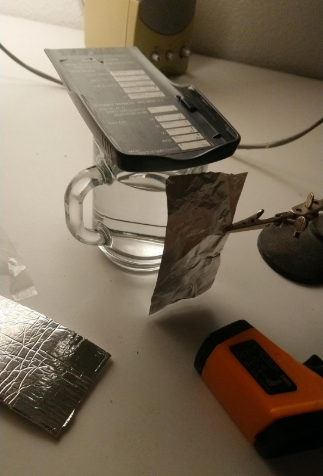
Kamer 19, alu met en zonder piepschuim 20, folie met of zonder piepschuim 23
( (273 + 22) ^ 4 - (273 + 19) ^ 4) 610^-8 is?
En dat is 0.18W
Per m2 = dat een factor 100 hoger dus 18W,
Maar ,,,,
+ 5% van de ingestraalde energie
'- convectie aan beide zijde naar de lucht
Heat transfer coefficient = 5
2 * 0.01 * ( 22 - 19 ) = 0.06
Literatuur Oninteressant
Zeer langdradig verhaal: https://dermotwhelanconstruction.com/formula-teplootdachi-radiatora
Created with Microsoft Office OneNote 2007
One place for all your notes and information